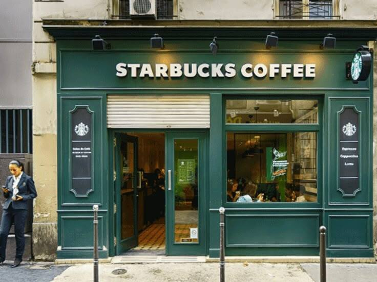
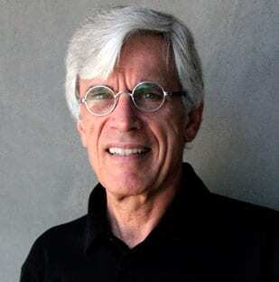
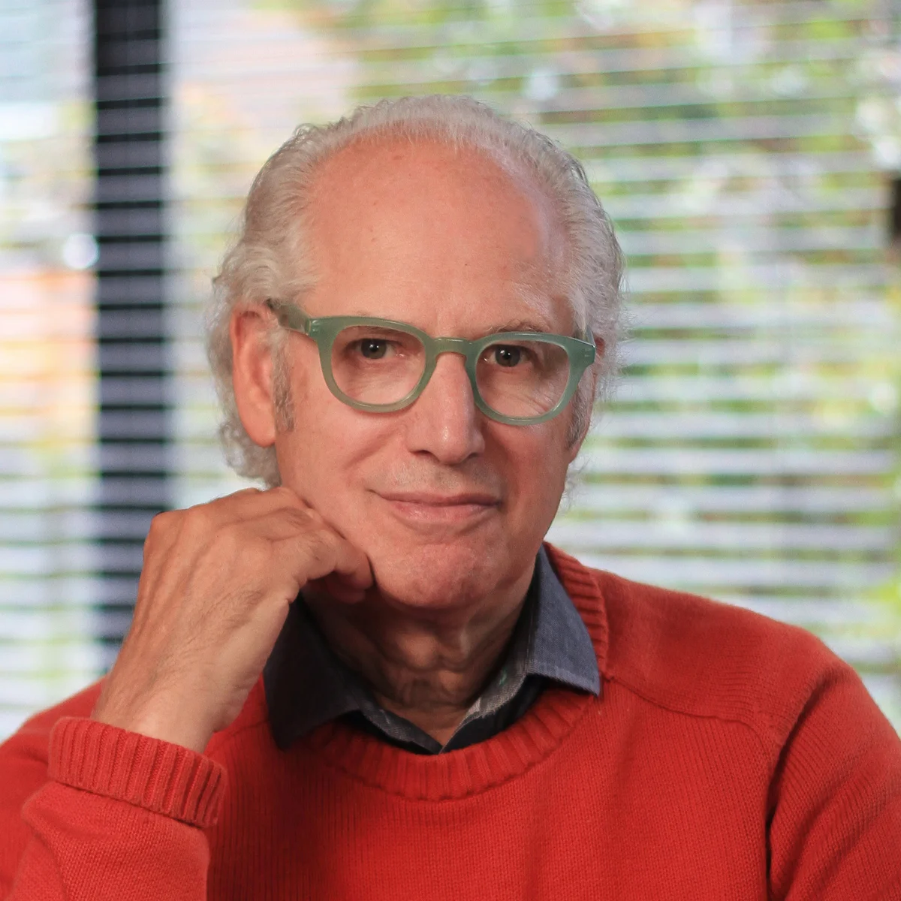
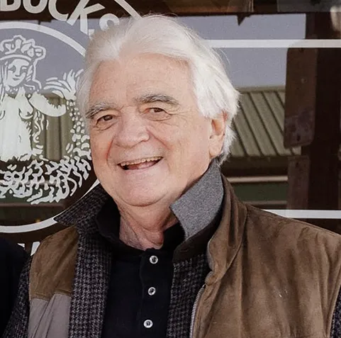

Starbucks was founded in 1971 in Seattle, Washington. Today, it is the largest coffeehouse company in the world, offering a variety of high-quality coffee beverages, pastries, and merchandise. Our mission is to inspire and nurture the human spirit – one person, one cup, and one neighborhood at a time.
From humble beginnings to a global brand, Starbucks continues to innovate while maintaining a commitment to sustainability, community engagement, and exceptional customer experience.


